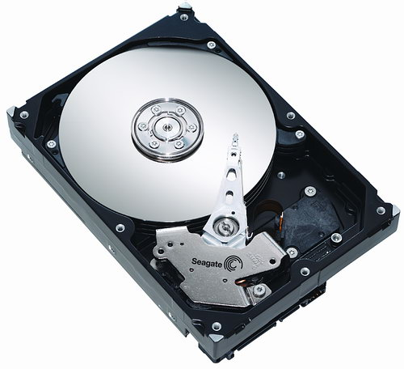
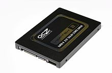

UNITÀ DI MASSA
Un'unità di massa può immagazinare grandi quantità di dati e in modo permanente.
Rispetto alla memoria principale, riesce a immagazzinare molti più dati, ma l'accesso a quest'ultimi è decisamente più lento.
Le unità di massa possono essere fisse o rimovibili. Le memorie di massa più diffuse sono gli HardDisk, ma sono destinati a essere sostituiti dai Solid State Disk.
Gli HardDisk, abbreviato HDD, sono dischi con un supporto magnetico sopra. Questi dischi contengono informazioni in binario (0 o 1).
